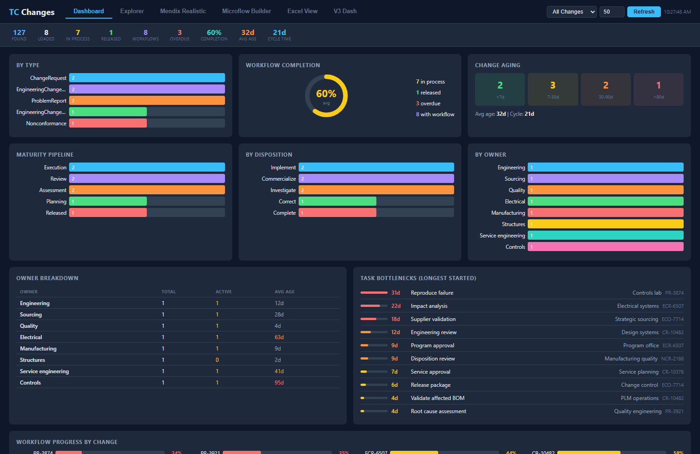

Case study · PLM reporting
Teamcenter Change KPI Dashboard
A React reporting surface that starts with Teamcenter saved queries, hydrates the returned objects through SOA, and keeps KPI, workflow, and impact evidence in one drillable view.
- Input
- Teamcenter saved queries
- Hydration
- Teamcenter SOA
- Interface
- React reporting dashboard
- Views
- KPI · workflow · impact

Problem
Spreadsheet rollups separate headline change metrics from the Teamcenter objects, workflow state, and downstream impact that explain them.
A reviewer can see a number but has to reconstruct the supporting story across exports and records. The goal was a repeatable reporting path that begins with Teamcenter queries and preserves drill-down evidence behind the summary.
My contribution
I built the React dashboard and the reporting flow from saved-query selection through SOA hydration.
I organized the resulting change records into KPI, workflow, and impact views so a summary and its underlying evidence remain part of the same interaction.
Architecture
The dashboard keeps the saved-query scope, hydrated object context, and reporting views connected.
Proof
README.mddefines the reporting dashboard and its spreadsheet-replacement goal.CLAUDE.mddocuments saved queries, SOA hydration, KPIs, workflow state, and impact views.- Sanitized dashboard preview runs a saved-query lens, exposes hydrated change rows, and supports workflow and impact drill-down without connecting to a live Teamcenter environment.
- Selection
- Saved-query lens defines the reporting scope
- Evidence
- Change rows retain workflow and impact context
- Public demo
- Deterministic fixtures, not enterprise records
Result
The project produces a repeatable Teamcenter reporting surface in which summary measures lead back to their evidence.
The change objects, workflow state, and impact remain available for inspection. It demonstrates the workflow without claiming a measured time or cost reduction that the source record does not establish.